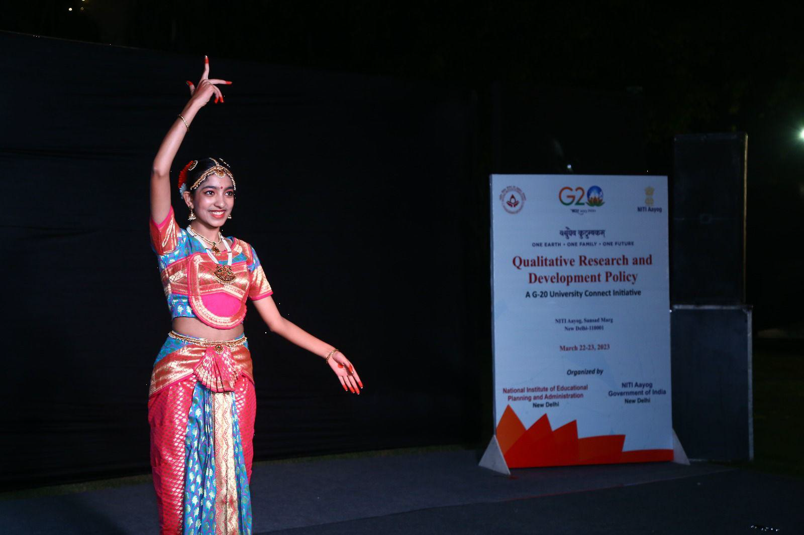
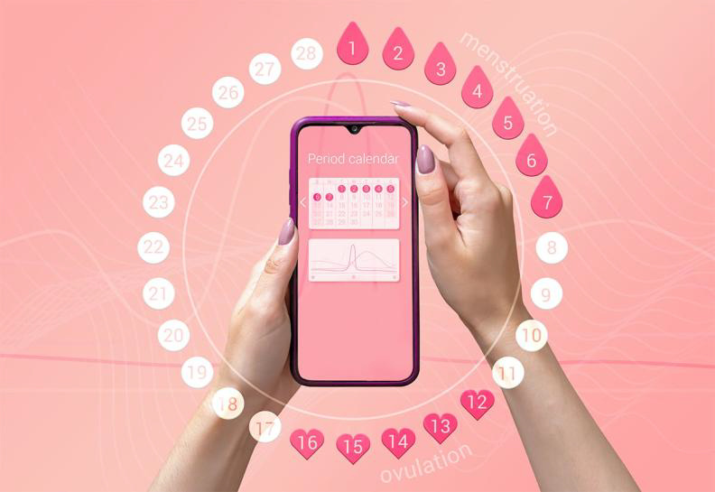

Shambhavi Sharma
Beliefs are the foundation of our identity. They shape how we perceive the world and how we respond to it. Formed through culture, relationships, media, and personal experiences, belief systems guide us—but they also differ vastly from person to person, leading to inevitable clashes of perspective.
The Question of Binary: As Claude Lévi-Strauss noted, binary oppositions like good vs. evil or tradition vs. change often drive narratives—and similarly, social discourse. But real-life belief systems rarely fit neatly into categories of "right" or "wrong." For instance, while advocating freedom of religion upholds individual rights, others may argue that it challenges national cohesion. Both stances hold merit depending on context.
Yet beliefs don't exist in a vacuum—they influence actions, sometimes in harmful or extreme ways. This is where accountability becomes essential. Forming a belief is natural and necessary, but we must take responsibility when that belief affects others. Being accountable means reevaluating our views, empathizing with differing opinions, and articulating our beliefs in ways that promote understanding rather than division.
The Question of Accountability: A modern metaphor for this appears in Inside Out 2 (2024), where the emotion Anxiety tries to replace Riley's core beliefs without justification. Her lack of accountability leads to chaos, while balance and harmony return only when both Anxiety and Joy acknowledge their biases and let Riley find her own way.
Education and law play vital roles here. Academic spaces allow exploration of diverse belief systems and encourage critical thinking—valuing Chinua Achebe and Joseph Conrad in the same breath. Similarly, laws adapt to evolving beliefs; the Mental Healthcare Act of 2017, for example, decriminalized suicide in India, reflecting a shift in how mental health is understood.
In conclusion, beliefs are powerful—they can change lives, shape societies, and rewrite constitutions. But with this power comes the duty to justify, reflect on, and be responsible for them. As Voltaire—and Spider-Man—remind us: "With great power comes great responsibility."
This content is not currently available.
By Shambhavi Sharma
In 2023, a lifelong dream came true when I represented India as a Brand Ambassador for Indian Culture at the G20 international event. The honor was humbling and unforgettable.
Taking part in the University Youth Challenge on Qualitative Research and Development Policy was a proud milestone. But the true highlight was performing Kuchipudi—a classical Indian dance that's close to my heart. On stage, I felt the power of cultural connection, using dance to express India's spirit to the world
Kuchipudi is more than art—it's a voice of heritage, rich in storytelling and emotion. Performing it at a global platform reminded me of India's unique role in the world: a blend of deep-rooted tradition and modern leadership.
That moment under the spotlight made me realize the impact of culture in diplomacy. I walked away not just with pride, but with a deeper commitment to keep sharing India's story—one performance at a time.
By Shambhavi Sharma
I've always felt a deep urge to help girls and women better understand menstruation—a natural process still surrounded by stigma in our society. This led me to Udanify, an organization that empowers women by spreading awareness about menstrual hygiene and breaking taboos.
As a fundraiser, I support Udanify's mission to educate young girls through workshops that provide accurate information and boost confidence. Many still face confusion and isolation due to lack of resources and awareness, but our efforts aim to change that.
Udanify helps normalize conversations about periods and promotes dignity through knowledge. Being part of this initiative has shown me the power of education and open dialogue. Every smile and every breakthrough moment makes me proud to be part of this journey toward change.
By Shambhavi Sharma
Lola came into my life when I was 14—a tiny toy poodle with soulful brown eyes who instantly stole our hearts. From her first day, she became more than a pet; she became family. Living with Lola is pure joy. She wakes me with nudges, races across the front yard with endless energy, and plays hide-and-seek in the evenings. Her favorite spots at home—by my desk and near the kitchen—remind us she's always nearby, waiting for a treat or simply offering comfort.
Traveling with her is equally fun. She loves car rides, her head out the window, soaking in the world with contagious excitement. But one day, Lola went missing. Panic set in as we searched everywhere—through the neighborhood, across shelters, online and offline. The house felt empty without her, and each night without her soft sighs was agonizing.
Days later, a call brought hope: someone in Ghaziabad had seen her. When we arrived and I saw her again, joy overwhelmed me. Her excited leaps and kisses said everything—she was home again. Her return filled our lives with warmth and love once more. Losing and finding Lola reminded me of the depth of love and resilience. She's not just a part of my life—she is its heart.
By Shambhavi Sharma
The rapid integration of automation and artificial intelligence is transforming industries and societies worldwide. Traditional skills are becoming obsolete, creating both challenges and opportunities. To remain relevant, workers must continuously learn and adapt to new roles that demand modern skillsets.Sectors like manufacturing, healthcare, and IT are undergoing major shifts, potentially displacing millions of jobs. According to McKinsey, 375 million workers may lose jobs by 2030. Reskilling and aligning education with industry needs are essential for economic survival.
Educational institutions must update curricula to enhance employability, emphasizing STEM fields, emerging technologies, and soft skills like ethics, emotional intelligence, and critical thinking. Careers in AI, data science, and coding are increasingly in demand. Governments and educators are responding by integrating computational thinking and coding into early education. India's NEP 2020 and Singapore's curriculum reforms are examples of future-oriented policy. Unique human abilities such as empathy and problem-solving remain crucial.
Teacher training, experiential learning, and adaptive platforms like BYJU's and Khan Academy can support these reforms. Internships and real-world projects should be prioritized to prepare students for dynamic careers. Aligning education with evolving industry demands will improve employability, reduce unemployment, and enhance global competitiveness. Governments, educators, and policymakers must collaborate to build inclusive, future-ready education systems that ensure social and economic stability in the age of AI.
In the past, most problems were local, but rapid transportation and communication have created a globally connected world. The Covid-19 pandemic is a stark reminder of how quickly issues can spread and affect lives and economies worldwide.Environmental health is deeply tied to human health. Climate change, natural disasters, and modern sedentary lifestyles contribute to global health problems that go beyond national borders. These challenges require a holistic, interconnected response.
Global health efforts must include sustainable living, proper nutrition, exercise, and preventive care—not just healthcare infrastructure. Youth-led climate action and global wellness movements support this shift toward healthier lifestyles.India has made progress through initiatives like Yoga Day, wellness organizations, and government programs such as ICDS, midday meals, the Universal Immunisation Programme, and Ayushman Bharat. These address malnutrition and healthcare access.
Globally, organizations like GAVI and models from countries like Thailand and Delhi show the impact of well-designed, inclusive healthcare systems. Shared global strategies, adapted locally, are key to success.
Countries like Finland, Rwanda, and Japan show that preventive care, education, and community engagement improve national health outcomes. Global health depends on many small, effective actions working together. Replicating successful models like Delhi's healthcare approach can help build a healthier, more sustainable world for future generations.